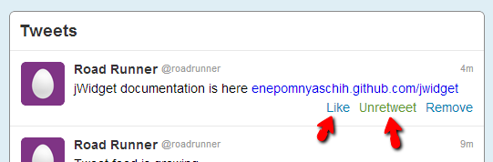

Source: https://github.com/enepomnyaschih/mt/tree/mt-2.1-4 (Git branch).
In this part we learn how to handle user events in scope of jWidget framework. First, we must activate buttons Like/Unlike and Retweet/Unretweet.
Here's a common scenario of Like button click handling in model-view architecture.
Notice that the view can update itself directly by its own before step 2. But it is unneccessary in model-view architecture, because the view listens "likeChangeEvent" anyway. Who knows what may trigger model modification? Any other views or services may access the model directly, but they hardly can access the corresponding views. That's why the view should get updated indirectly. It should listen to model modifications and handle them appropriately. This way, it can keep itself updated.
In some other model-view frameworks (actually, MVC frameworks) controller is responsible for event listening and handling. jWidget doesn't provide any features for controller implementation. Controller part is identified by the author of the framework as redundant and complicating things with no benefit. jWidget goes without controller.
Event management API is optimized for performance in jWidget and implemented by OOD principles. That's the reason why event management API is very different in jWidget and jQuery. jWidget event is implemented by class Event and defined by its interfaces Listenable and IEvent. One event instance represents one kind of action. In contrast, jQuery element is an object that manages events in jQuery and it represents all kinds of events that may happen to this element, and the event kind is identified by its name. jQuery implementation begets redundancy, because all events have a common set of parameters regardless of event kind difference. For example, it makes no sense to read mouse coordinates from key press event, but jQuery type definitions provide you with them anyway. In jWidget, you can specify different parameter types for different kinds of events, and that is easier to manage.
So, let's start listening Like and Retweet button clicks. Let's follow the steps described above. First, bind handlers to click events using jQuery in TweetView class:
protected renderLike(el: JQuery) {
el.toggleClass("active", this.tweet.like).text(this.tweet.like ? "Unlike" : "Like");
el.on("click", event => {
event.preventDefault();
this.tweet.like = !this.tweet.like;
});
}
protected renderRetweet(el: JQuery) {
el.toggleClass("active", this.tweet.retweet).text(this.tweet.retweet ? "Unretweet" : "Retweet");
el.on("click", event => {
event.preventDefault();
this.tweet.retweet = !this.tweet.retweet;
});
}
At the next step, we should replace Tweet interface with a class. Readonly fields "like" and "retweet" should be replaced with getters and setters. To implement them, we need to define likeChangeEvent and retweetChangeEvent.
import Event from "jwidget/Event"; import Listenable from "jwidget/Listenable"; export default class Tweet { readonly fullName: string; readonly shortName: string; readonly avatarUrl48: string; readonly contentHtml: string; readonly time: number; private _like: boolean; private _retweet: boolean; private _likeChangeEvent = new Event<boolean>(); private _retweetChangeEvent = new Event<boolean>(); constructor(config: TweetConfig) { this.fullName = config.fullName; this.shortName = config.shortName; this.avatarUrl48 = config.avatarUrl48; this.contentHtml = config.contentHtml; this.time = config.time; this._like = config.like; this._retweet = config.retweet; } get like() { return this._like; } set like(value) { if (this._like !== value) { this._like = value; this._likeChangeEvent.trigger(value); } } get likeChangeEvent(): Listenable<boolean> { return this._likeChangeEvent; } get retweet() { return this._retweet; } set retweet(value) { if (this._retweet !== value) { this._retweet = value; this._retweetChangeEvent.trigger(value); } } get retweetChangeEvent(): Listenable<boolean> { return this._retweetChangeEvent; } static createByJson(json: any) { return new Tweet({ ...json, time: new Date().getTime() - json["timeAgo"] }); } } export interface TweetConfig { readonly fullName: string; readonly shortName: string; readonly avatarUrl48: string; readonly contentHtml: string; readonly time: number; readonly like: boolean; readonly retweet: boolean; }
Event is triggered with trigger method, which takes an argument to pass to event listeners. In this case it is boolean - new value of the property. jWidget event is very simple: all listeners get iterated and called one by one immediately right in trigger method. There are no special features like bubbling, "preventDefault" or "stopPropagation", as well as there is no pretection against dead loops. If you want to introduce something like this, implement it by yourself using IEvent interface. jWidget is modest in this regard, but fast.
Since we have replaced "createTweetByJson" function with "createByJson" static method, let's immediately change its usage.
static createByJson(json: any) {
return new ApplicationData(json.profile,
(<any[]>json.tweets || []).map(Tweet.createByJson));
}
Next, we must bind handlers to the events and update the view in them. In contrast to React or Backbone, you don't need to update the entire view in jWidget - you just update what you need. To prevent code duplication, let's extract element updating code of TweetView into separate methods "updateLike" and "updateRetweet".
protected renderLike(el: JQuery) {
this._updateLike();
this.tweet.likeChangeEvent.listen(() => this._updateLike());
el.on("click", event => {
event.preventDefault();
this.tweet.like = !this.tweet.like;
});
}
protected renderRetweet(el: JQuery) {
this._updateRetweet();
this.tweet.retweetChangeEvent.listen(() => this._updateRetweet());
el.on("click", event => {
event.preventDefault();
this.tweet.retweet = !this.tweet.retweet;
});
}
private _updateLike() {
this.getElement("like").toggleClass(
"active", this.tweet.like).text(this.tweet.like ? "Unlike" : "Like");
}
private _updateRetweet() {
this.getElement("retweet").toggleClass(
"active", this.tweet.retweet).text(this.tweet.retweet ? "Unretweet" : "Retweet");
}
It must work! Try to run it in browser and click Like/Unlike and Retweet/Unretweet buttons. Moreover, you can feel the transparency of this approach even more. Just for fun, define a global leverage to access the model.
(<any>window).data = data;
Refresh the page, open browser console and run next command:
data.tweets[0].like = true;
Your application will obediently reflect the change.
You may find this code too bulky. We wrote a ton of code just to implement a couple of very simple event handlers. Your judgement is absolutely justified. Our excuse to this is that we want to let you understand the meat and bones of model-view architecture. That's just how it works. And that's what will make your life easier if you decide to add more views to the models you already have. However, you indeed don't need so much code to maintain proper architecture - jWidget provides a bunch of useful utilities that may reduce this code drastically, and we will demonstrate them in the next tutorial.
Tutorial. Part 5. Properties